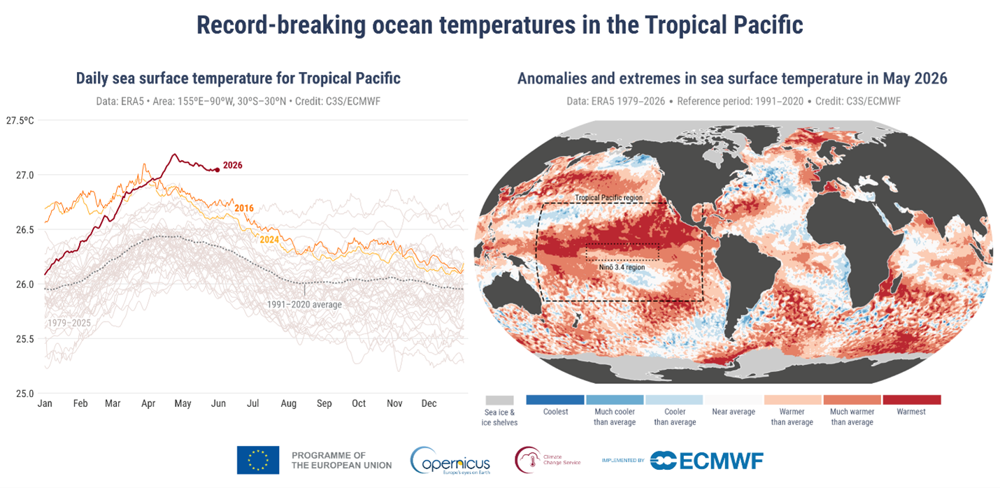
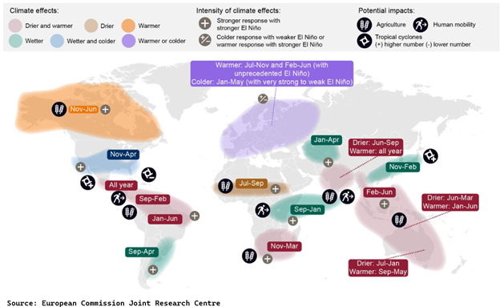
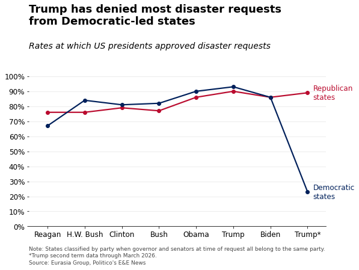

A strong El Niño will disrupt global commodity and energy markets
Henning Gloystein
Unusually strong El Niño conditions have developed in the tropical Pacific and are forecast to intensify from July to September and into the Northern Hemisphere’s fall and winter. According to the World Meteorological Organization (WMO), this pattern will increase the risk of heat waves, droughts, heavy rainfall, and other extreme weather events in many parts of the world.
The WMO is stepping up coordination, climate information services, and early warning support to help governments, humanitarian agencies, climate-sensitive sectors such as agriculture and health, and vulnerable communities prepare for potential impacts.
Outlook:
- El Niño conditions stem from rising water temperatures in the tropical Pacific, which have reached record highs, according to data from the EU’s Copernicus Climate Service. “Across all scenarios, extreme heat will build across the tropics and subtropics from September,” said the European Commission’s Joint Research Centre (JRC). “It will peak between December 2026 and February 2027 and persist into spring 2027.”

- For agricultural markets, El Niño increases the risk of drought across the Indian subcontinent, Southeast Asia, and Australia. Below-normal rainfall is also forecast for parts of Central America, the Caribbean, and northwestern South America.
- Durum wheat is a particular concern, warned the European Commission, as global prices are predicted to rise sharply as El Niño intensifies.

- For seaborne energy and commodity markets, El Niño raises the risk of low water levels and shipping restrictions at the Panama Canal, which connects the North Atlantic with the Pacific basin and is critical for shipments of oil and liquefied natural gas (LNG) from the US to Asian buyers.
- In Europe, a strong El Niño would probably bring a hot summer and unsettled weather in the fall and winter, likely mild, windy, and wet. However, its impact on the region is less predictable. Warmer conditions would reduce Europe’s winter energy and heating demand.
Politicized disaster aid raises risks for insurers and builders
Timothy Puko and Conor Frydenborg
President Donald Trump has overseen a sharp partisan divide in federal disaster aid to states, according to recent reviews of federal data. Reports by Politico and the Associated Press found that, during Trump's second term, Democratic-led states were 25%–75% less likely than Republican-led states to receive federal disaster aid. Democratic-led states also often waited several additional weeks for assistance. This pattern aligns with Eurasia Group’s January 2025 expectation that US disaster aid could become more politicized or serve as leverage, increasing financial pressure on insurers and builders. White House officials have denied that politics play a role in disaster aid decisions.

Outlook:
- Insurance providers, construction companies, engineering firms, and any infrastructure developers would face downside risks from more volatile federal disaster responses. Federal declarations and funding are critical to efficient rebuilding efforts, and a more politicized, complex, and less predictable system would make those efforts harder to manage and less profitable.
- If political conditions on federal aid become normalized, future administrations of either party may adopt the same approach against political opponents (see: US Daily: Funding freezes will keep putting the squeeze on Democrats, 2 October 2025). As Washington grows more politicized, that outcome appears increasingly likely. More selective freezes or rejections of disaster aid could become a durable political tool.
- Courts will overturn some aid rejections, but litigation will take time. Delays would leave states more vulnerable to budget shortfalls during rebuilding efforts, slowing recovery and spreading costs more broadly.
- Higher eligibility thresholds, greater state cost-sharing, and broader presidential discretion over disaster declarations are more plausible than outright abolition of the Federal Emergency Management Agency (FEMA). While less extreme than eliminating FEMA, all three changes would add complexity and uncertainty to an already difficult process.
Europe will fall short of gas supply targets while avoiding major disruptions
Conor Frydenborg and Henning Gloystein
European gas storage is filling unevenly across the continent and remains largely insufficient, although major winter disruptions to supply are unlikely. Rising global average temperatures and the ongoing El Niño will probably bring Europe well-above-average temperatures and wetter-than-average conditions during winter 2026-2027. Those conditions would keep demand for heating fuels below average and hydropower stores adequately filled. At the same time, continued capacity additions will likely push wind generation to record highs, further easing pressure on power systems. Nonetheless, gas supplies will remain tight this winter, and unexpected effects from El Niño, along with further supply disruptions, remain significant tail risks.
Outlook:
- EU member states will probably fall short of Brussels’s mandatory 80% gas storage target by 1 November. Italy, Europe’s most gas-reliant economy, is well-stocked at over 70%, but Germany, the major economy most exposed to gas price swings, remains below 45%. Germany will likely reach 70%-75%, although it could reactivate 6.5 gigawatts of coal-fired capacity if needed.
- Ongoing disruptions in the Strait of Hormuz will keep the global gas market tight at least through August, driven by renewed military conflict (see: Iran, MENA Crisis: Escalation likely as Iran sees path to Hormuz control, 15 July 2026). Even if a durable peace holds, Qatar’s Ras Laffan LNG complex will probably not return online in time for the 2026-2027 Northern Hemisphere winter. Early 2027 is the earliest plausible restart date.
- This year’s disruptions to oil and gas markets are pushing Brussels to intensify its electrification efforts. The European Commission plans to require member states to reduce electricity taxes to narrow the gap between electricity and gas prices, with electricity prices broadly higher across much of the bloc. Combined with the substantial rollout of renewable energy and battery storage systems, those measures will probably lower European electricity prices considerably over the next few years and reduce the bloc’s dependence on imported gas (see: EUROPE, POWER: Wholesale electricity costs will fall sharply before 2030, 9 July 2026).
Potential US inverter import ban is sign of growing focus on grid technology
Herbert Crowther
The US Federal Communications Commission (FCC) is reportedly considering a ban on future US inverter imports, a move that would implicitly target Chinese suppliers (the Chinese producer Sungrow is the largest supplier of utility-scale inverters to the US market). The FCC is considering the measure after recent EU steps targeting Chinese inverters and expanded US scrutiny of inverter-related cybersecurity risks in 2025 (see: EU: Europe will not lean on China following transatlantic fallout, 19 May 2026).
Outlook:
- Any FCC action will likely include an exemption process for specific firms. US domestic inverter capacity cannot meet domestic demand, so a full cutoff of inverter imports would undermine the country’s ability to bring new power capacity online. Framing the measure as applying to all imports, rather than specifically to Chinese imports, will also reduce the risk of Chinese retaliation.
- One condition for firm-level exemptions may be a commitment to expand manufacturing in the US. In similar FCC actions targeting drone and router imports, the Department of Defense has supported domestic manufacturing commitments as an element of firm-level approvals. The FCC could apply the same model to inverters.
- Inverters and other sensitive grid technologies, such as transformers and switchgear, are part of the electrotechnology supply chain that is likely to face a stronger push for domestic manufacturing in the US. Cybersecurity risks and links to the domestic data center buildout, particularly for transformers, are increasing the political importance of these segments. That dynamic also suggests that any FCC action will likely be calibrated to encourage expanded domestic manufacturing commitments and approvals for non-China suppliers, rather than halt all inverter imports.
- The FCC’s deliberations still fall well below the consideration of a “rip and replace” policy for existing Chinese grid components in the US. Additional US policy support for these segments could come through post-midterms adjustments to the 45X advanced manufacturing tax credit or funding from offices such as the Department of Energy’s Office of Energy Dominance Financing and the Department of Defense’s Office of Strategic Capital.
CO₂ batteries will scale alongside data centers in 2027
Yara Alamin and Conor Frydenborg
CO₂ batteries will likely play a meaningful role in the energy mix as a scalable, long-duration energy storage technology, with discharge periods of 8-24 hours, for energy-intensive industries and grids. Developer Energy Dome has built or is producing three CO₂ energy storage facilities—two in Italy and one in Ireland. The Irish facility is expected to come online in 2028. These systems, also backed by Google, show the potential for rapid, scalable deployment and growing interest from major energy users. CO₂ batteries use excess power to compress carbon dioxide into a liquid, then expand it back into gas when grid demand rises, helping to balance nighttime demand on grids with high renewable penetration.
Outlook:
- CO₂ batteries use standardized components and do not rely on critical minerals. Companies can deploy them across regions while reducing supply chain risk. CO₂ batteries also have a much longer expected lifetime, nearly three times that of lithium-ion batteries. As storage capacity increases, their cost per kilowatt-hour can fall to as much as 30% below that of lithium alternatives.
- Large tech companies will likely deploy technologies such as CO₂ batteries to secure continuous power for energy-intensive data centers when renewable output is low. Power companies are also adopting grid-scale CO₂ storage to strengthen local grid stability. Meanwhile, researchers are exploring potential applications in heavy-duty electric trucks and cargo ships.
- The main barrier to a larger role for CO₂ batteries in the energy system is the falling cost and increasing duration of more traditional lithium-ion batteries. Lithium-ion technology will likely capture much of the four- to eight-hour storage market before CO₂ batteries scale. CO₂ batteries also have lower charging efficiency than lithium-ion alternatives, losing roughly one-third to one-quarter of stored charge over a full cycle, and they require more space. However, CO₂ batteries could become especially important for balancing demand over periods longer than eight hours.